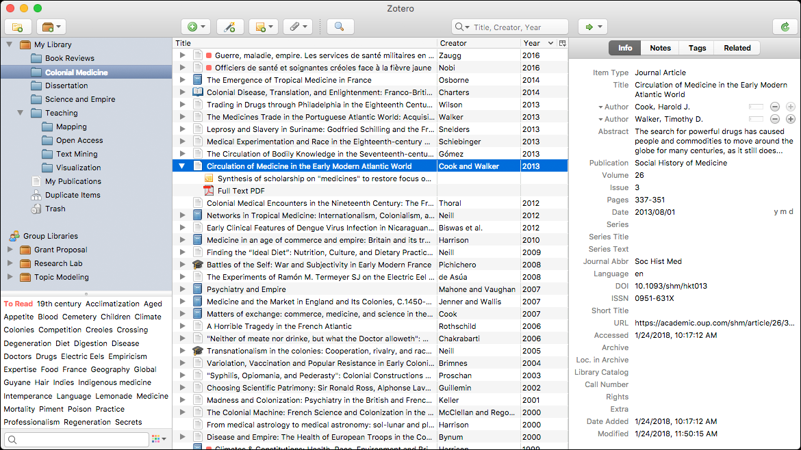

Appendix A: Annotation and Notekeeping
Collaborative web annotation
There are probably others, but here is what I have found so far.
hypothes.is

Many notekeeping options (see below) have plugins for integration with Hypothesis.


Memex

See the website for a demo video for researchers.
Hierarchical note-taking with backlinks and cross-references
Primarily Offline Interface
These offer limited real-time collaboration but don’t have the same lock-in effect (so you aren’t constrained to stay with any particular system, service, or app). Furthermore, unlike the systems that are primarily online services, users can create plugins for them.
Obsidian
Supposedly more well-polished and full-featured than Logseq.
Has plugins (2000+) for Hypothesis integration, time-synced notes on audio files, automatic captioning, PDF annotation, embedded drawings, chemistry diagrams, integrated terminals, graphical chart editing, flashcards and spaced repetition, and more.
Anyone can develop their own plugins with the plugin API.
Has apps for every major platform.


Some additional information
- https://www.eleanorkonik.com/2021-04-24/
- https://www.reddit.com/r/ObsidianMD/comments/v20eb7/vault_showcase_and_tips_and_tricks/
- https://forum.obsidian.md/t/university-setup-with-lecture-notes-progress-bar-and-more-using-templater-dataview-and-buttons/32094
- https://obsidianninja.com/new-obsidian-showcases-dashboards-movie-library-menu-bar-more/
- https://forum.obsidian.md/t/example-workflows-in-obsidian/1093/24
Logseq
Connect your notes, increase understanding.


Has plugins (150+) for Hypothesis integration, time-synced notes on audio files, automatic captioning, PDF annotation, embedded drawings, chemistry diagrams, integrated terminals, graphical chart editing, flashcards and spaced repetition, and more.
Anyone can develop their own plugins with the plugin API.
Has apps for every major platform.
OneNote
Perhaps more intuitive to use than Obsidian, and is part of the Microsoft ecosystem. However, there are fewer plugins (for integration with other services) and the notes cannot be edited with other programs.
Offers better real-time collaboration features than the other offline-oriented options.
Has apps for every major platform and a web interface.
Primarily/Exclusively Online
These offer effortless real-time collaboration (whereas collaboration with the above [except OneNote] would be more like pushing to a Git repository) but are generally pricier, lack robust offline access to notes, and have much higher lock-in (meaning it’s difficult, if not nearly impossible, to migrate to other note systems). Editing using other editors is generally not possible, although usually there are export options. (However, lots of exporting and importing is not convenient and also does not make use of the collaborative features.)
Notion
Has apps for every major platform and a web app.

Roam Research
As easy to use as a document. As powerful as a graph database.
Roam helps you organize your research for the long haul.
Also has apps for every major platform, as well as a web interface.

Saga.so
Desktop apps for Windows and Mac (no Linux, mobile, or web interface at the moment).

Markdown editors geared towards research/academia
These are compatible with systems that are based on Markdown (.md) files, such as Obsidian and Logseq. (Note that while the online-oriented systems typically also make use of Markdown syntax, transparent access to Markdown files is not available.)
Zettlr
From idea to publication in one app: Zettlr accompanies you while writing your blog post, newspaper article, term paper, thesis, or entire book.
Privacy First:
Zettlr is Privacy First: There is no forced cloud-synchronization and all files stay on your computer.
From Idea to Publication:
Manage all your writing projects from one app: From the initial idea to a final publication, already typeset in the appropriate template.
First-class Citation Support:
Hook Zettlr into your reference manager to have all your sources when you need them.


Academic literature and citation management
Reference Managers
Zotero
I’ve noticed that more note-keeping, citation management, and bibliography tools have integration options for Zotero than do for Mendeley. This leads me to believe that Zotero is more popular / widely used. This could also be due to observation bias since I am personally only familiar with Zotero.
Has apps for all major platforms. Not the prettiest per se, but has plenty of useful features.

Note also zoterobib, an officially-endorsed bibliography tool. (Not the same as Zotero, but made by the same development team.)
Mendeley
Appears to be a subset of Elsevier, as its homepage (<www.mendeley.com>) redirected me to the Elsevier website after a short delay.
Article Managers
ReadCube

ReadCube’s literature management system helps businesses discover, organize, read, annotate, share, and cite research. Simplify your day-to-day so you’re free to make tomorrow’s discoveries.


{kind=link}
{kind=link}
{kind=link}
{kind=link}
{kind=link}
{kind=link}
{kind=link}
{kind=link}
{kind=link}
{kind=link}
{kind=link}
{kind=link}
{kind=link}
{kind=link}
{kind=link}
The ReadCube website has a page where it provides comparisons of its services with those of Rightfind, Article Galaxy, Endnote, and Mendeley. I find it a bit suspicious that it doesn’t compare itself with Paperpile or any of the other popular similar services.
PaperPile

Manage your research library right in your browser.
See its Features page for an overview. (Categories: Manage References, Find and Collect, Organize PDFs, Highlight and annotate, Share and Collaborate, Cite in Google Docs).
Its Feature Roadmap is also available for viewing.
Advertises that it has a plugin for Microsoft Word and Google Docs. It also has mobile apps for Android/iOS.

Other
PaperMemory
It is a browser extension.
Parse papers you open automatically.
Papers are stored in your Memory automatically, without a click. You can then search them, tag them, take personal notes etc.
Match preprints to publications
By querying SemanticScholar, DBLP and CrossRef, PaperMemory can discover the proper publication of Arxiv pre-prints.
You live in your browser? So do your papers
Share papers to your favorite apps by copying:
- a BibTex entry for Overleaf
- a Markdown link [title](url) link for Github, HackMD or Notion
- a HyperText link for emails, Google Docs, Slack, etc.
Discover code repositories Using the PapersWithCode API, PaperMemory will match code repositories with papers in your Memory.
Enhance ArXiv.org
Display the actual pubication venue of published papers, a link to the code repository, copy the BibTex entry etc.
Instantly copy
.bib-compatible bibliography entries Export a paper’s BibTex entry directly from the extension, or bulk export BibTex entries by paper tag. You can even use PaperMemory to update the ArXiv entries of a stand-alone.bibfile.Highly customizable
Change the theme to light or dark, control the default link copied to your clipboard, add links to SciRate / HuggingFace Papers / Ar5iv / ArxivSanity, trigger parsing manually, export / import papers etc.
And many more features! Github Gist synchronization, regex-based automatic paper tagging, arbitrary website parsing to record Blog posts or dataset websites, etc.